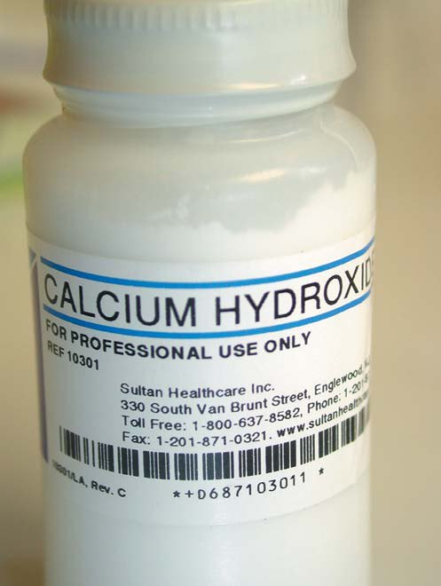
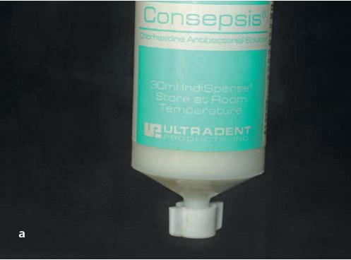
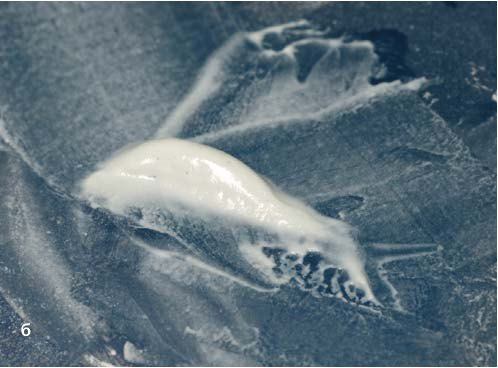
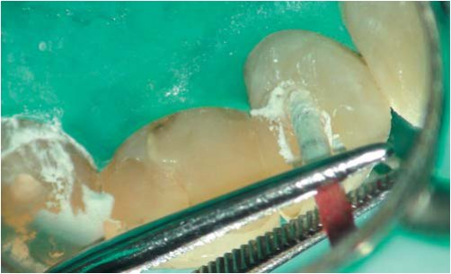
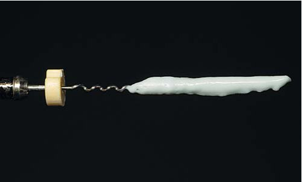
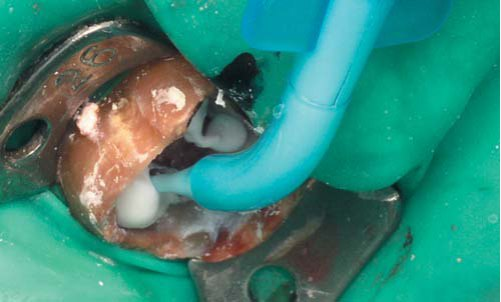
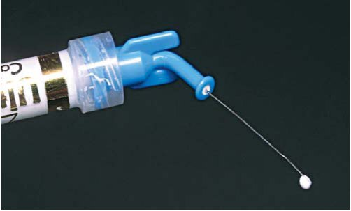
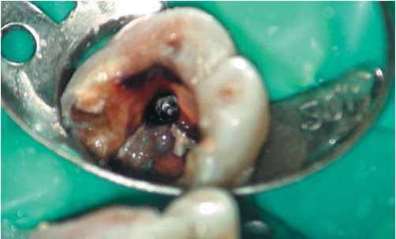
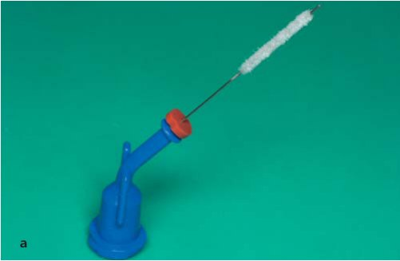
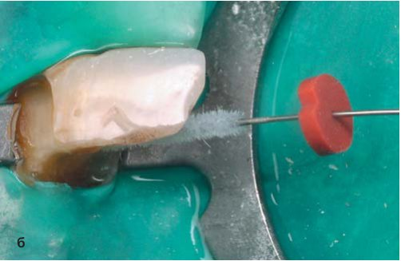

Огляди · журнал «ДентАрт» 2013 №2 (71)
Особливості застосування аплікаційних форм препаратів на основі гідроксиду кальцію
CALCIUM HYDROXIDE BASED MATERIALS AND THEIR USE IN ENDODONTICS
Вступ
Стаття є другою частиною з циклу публікацій, присвячених властивостям і особливостям застосування препаратів на основі гідроокису кальцію (перша частина статті опублікована в «ДентАрті» №4 за 2012 рік). У роботі подано класифікацію препаратів гідроокису кальцію залежно від розчинника, характеристики кожної з груп. Крім того, у статті висвітлено питання, що стосуються оптимальних термінів тримання пасти гідроокису кальцію в кореневому каналі, методик внесення і видалення препаратів гідроокису кальцію, а також їх впливу на якість подальшого пломбування кореневих каналів.
Аплікаційні форми гідроксиду кальцію
Пасту для тимчасового пломбування кореневих каналів між відвідинами можна приготувати ex tempore безпосередньо перед застосуванням, використовуючи очищений порошок гідроокису кальцію (фото 1). Існує безліч готових патентованих препаратів на основі гідроокису кальцію. Будь-яка паста на основі гідроокису кальцію складається як мінімум з двох компонентів: порошка самого гідроксиду кальцію і розчинника. Крім того, до складу таких паст можуть входити різні добавки, наприклад рентгеноконтрастні речовини, антисептики, антибіотики, кортикостероїдні препарати і т. д. Середовище, або розчинник, може істотно впливати на властивості пасти гідроокису кальцію.

Усі розчинники, що використовуються для приготування пасти гідроокису кальцію, можна поділити на три основні групи (Л. Фава, В. Саундерс/L. Fava, W. Saunders, 1999):
- Водні розчинники: вода, фізіологічний розчин, розчини місцевих анестетиків, розчин Рінгера, водна суспензія метилцелюлози і карбоксиметилцелюлози, розчин аніонного детергента і т. д.
Приклади комерційних препаратів: Каласепт/Calasept, Калксіл/Calxyl, Ультракал ІксЕс/Ultracal XS, Пульпдент/Pulpdent, Темпканал/Tempcanal, Гіпокал/Hypocal, Кальципульп/Calcipulpe, Кальсепт, Кальсепт Йодо. - В'язкі розчинники також, як і препарати першої групи, водорозчинні, але мають в'язкішу консистенцію. До них належать багатоатомні спирти: гліцерин, поліетиленгліколь, пропіленгліколь.
Приклади комерційних препаратів: Метапаст/Metapaste, Кален/Calen. - Олійні розчинники, нерозчинні у воді. До них належать: оливкова олія, силіконова олія, камфоромонохлорфенол (CMCP), метакрезилацетат, деякі жирні кислоти.
Приклади комерційних препаратів: Вітапекс/Vitapex, Метапекс/Metapex, Діапекс/Diapex.
Властивості розчинника визначають швидкість дисоціації гідроксиду кальцію на іони Са2+ і ОН-, а також його розчинність у тканинній рідині. Чим вища в'язкість пасти, тим нижча швидкість дисоціації і менша розчинність. Зі сказаного вище випливає, що препарати першої групи (на водній основі) відносно швидко дисоціюють на іони і швидко розчиняються в тканинній рідині. В'язкі препарати (друга група) забезпечують повільніше і поступове вивільнення іонів Са2+ і ОН-. Пасти на олійній основі значно ускладнюють дисоціацію гідроксиду кальцію і мають найменшу розчинність у тканинній рідині.
В ідеалі, розчинник не повинен суттєво змінювати pH гідроокису кальцію і, відповідно, не повинен знижувати його антибактеріальну активність. Розглянемо деякі комбінації розчинників і гідроксиду кальцію, використовувані для приготування паст для тимчасового внесення у кореневий канал.
Розчини місцевих анестетиків використовуються для приготування паст на основі гідроксиду кальцію завдяки своїй доступності, стерильності і зручності вживання. Проте рівень pH цих розчинів досить низький і теоретично здатний знижувати pH готової пасти гідроокису кальцію. Наприклад, рівень pH Ультракаїну ДС дорівнює 3,61. Проте Х. Солак/Н. Solak і М. Озтан/М. Oztan (2003), порівнюючи рівень pH різних паст на основі гідроксиду кальцію, встановили, що відразу після замішування паста гідроокису кальцію, приготована на воді або фізіологічному розчині, мала вищий рівень pH, ніж паста, приготована з порошку гідроокису кальцію і розчину Ультракаїну або Цитанесту (12,0% 12,2 проти 11,35-11,4 відповідно). Але до 7-ї доби рівень pH паст гідроокису кальцію на основі анестетиків збільшувався до 11,55-11,7 і ставав порівнянним з pH паст на основі води і фізіологічного розчину, рівень якого трохи знижувався — до 11,43-11,5 відповідно. Ці дані були підтверджені іншим дослідженням (Юсел А./Yucel A. і співавтори, 2007).
К. Естрела/С. Estrela з колегами (1995) продемонстрували в експерименті, що пропіленгліколь обмежує дифузію гідроксил-іонів з пасти гідроокису кальцію у порівнянні з фізіологічним розчином і розчином анестетика. К. Сафаві/К. Safavi і Т. Накаяма/Т. Nakayama (2000), вимірюючи електропровідність розчинів, встановили, що чим вища концентрація гліцерину і пропіленгліколю, використовуваних для приготування пасти, тим нижчий ступінь дисоціації гідроксиду кальцію, а отже і його ефективність. Невелика кількість гліцерину або пропіленгліколю (у концентрації до 20%), навпаки, трохи збільшувала ступінь дисоціації гідроксиду кальцію. Інші дослідження також демонструють активну дифузію іонів з пасти на основі гідроокису кальцію і розведеного водного розчину гліцерину (Алакам Т./Alacam T. і співавт., 1998, Камоес І./Camoes I. і співавт., 2003). Виходячи з отриманих результатів, автори не рекомендують використовувати в'язкі розчинники в чистому вигляді або їх концентровані розчини для приготування паст на основі гідроокису кальцію.
Більшість розчинників, що використовуються для приготування паст гідроокису кальцію, інертні, тобто не мають самостійної антибактеріальної активності. До них належить вода, фізіологічний розчин, розчин Рінгера, розчини місцевих анестетиків, метилцелюлоза, гліцерин і т. д. Як ми зазначали у попередній статті цього циклу, гідроксид кальцію має виражену антибактеріальну активність щодо первинної інфекції, проте недостатньо ефективний проти деяких факультативних мікроорганізмів, які відіграють ключову роль у вторинній інфекції. У зв'язку з цим виникає необхідність у додаванні до гідроксиду кальцію різних речовин, що мають виражену антибактеріальну дію і здатні підвищити ефективність тимчасового пломбування каналу пастами на основі гідроокису кальцію. Як один з таких медикаментів, пропонувалося використовувати камфоромонохлорфенол (CMCP). Препарати фенолів здатні руйнувати ліпідні мембрани бактерій, а також інактивувати ферментні системи клітин (Хьюго В./Hugo W., Рассел А./Rassel A., 1998). Цей препарат сам має сильну бактерицидну дію, зокрема і щодо грампозитивних факультативних анаеробів, і здатний значно підсилювати антимікробні властивості гідроксиду кальцію (Сікейра Дж., де Узеда М., Гомес Б./Siqueira J., de Uzeda M., 1997, 1998; Gomes B. і співавт., 2002). Проте нині препарати на основі CMCP не рекомендуються для використання через високу цитотоксичність і властивості викликати алергійні реакції (Мессер Х., Фейгал Р./ Messer Н., Feigal R., 1985; Чанг І./Chang Y. і співавт., 1999; Барбоса С./Barbosa S., 2005).
Для посилення антимікробного ефекту гідроокису кальцію були також запропоновані його комбінації з різними іригаційними розчинами. Дослідження C. Хенні/S. Haenni (2003) і колег in vitro засвідчило, що змішування порошку гідроксиду кальцію з такими препаратами, як 1% гіпохлорит натрію або 0,5% розчин хлоргексидину, не сприяло збільшенню його бактерицидної активності щодо E. faecalis і C. albicans. З другого боку, дослідження М. Зендер/М. Zehnder з колегами (2003) показало, що додавання в пасту гідроксиду кальцію 5% розчину гіпохлориту натрію підвищує її гістолітичну здатність. Значно вираженішу антимікробну активність має 2% розчин хлоргексидину біглюконату, який часто використовують для приготування пасти гідроокису кальцію ex tempore (фото 2 а, б).


Хлоргексидин сам має широкий спектр антимікробної дії, зокрема і щодо E. faecalis (Валтімо Т./Waltimo T. і співавт., 1999; Портеньє/Portenier і співавт., 2006, Баллал/Ballal і співавт., 2007), низьке поверхневе натягнення, добрі дифузійні властивості і відносно низьку цитотоксичність. Е. Сірен/Е. Siren із співавторами (2004) встановили, що розчин хлоргексидину, а також йодний розчин йодиду калію (IPI) різко посилюють антибактеріальний ефект гідроокису кальцію щодо E. faecalis. Аналогічні результати продемонстрував І. Еркан/E. Ercan і співавт. (2006). Використовуючи модель, запропоновану М. Хаапасало/М. Haapasalo і Д. Орставік/D. Orstavik (1987), він довів, що додавання 2% хлоргексидину до порошку гідроксиду кальцію у багато разів підвищує його антимікробну активність щодо E. faecalis і C. albicans у порівнянні з пастою гідроокису кальцію, приготованою на дистильованій воді. Крім того, паста гідроокису кальцію, приготована на основі розчину хлоргексидину, значно підвищує його ефективність і в знищенні грибів роду Candida (Валтімо Т. і співавт., 1999).
Вивчаючи in vitro початкову і залишкову (через 3 тижні) антимікробну активність паст на основі гідроокису кальцію, Дж. Соарес/J. Soares з колегами (2007) встановив, що найбільшу антимікробну активність щодо грампозитивної флори має паста на основі гідроокису кальцію і 2% розчину хлоргексидину. Трохи гірші властивості мала паста гідроокису кальцію на основі інертного розчинника (пропіленгліколю). Пасти на основі камфоромонохлорфенолу, а також розчину анестетика значною мірою втрачали первинну ефективність і виявляли низьку залишкову антибактеріальну активність.
З викладеного вище випливає, що у випадках, коли маємо справу з вторинною інфекцією, антибактеріальний ефект гідроксиду кальцію має бути посилений за допомогою введення до складу пасти для тимчасового пломбування каналів додаткових дезінфікуючих агентів, наприклад 2% розчину хлоргексидину.
Терміни експозиції гідроксиду кальцію
У вчених і клініцистів донині не існує єдиної думки щодо оптимального часу експозиції гідроокису кальцію в кореневому каналі. Дехто вважає, що цілком достатньо тижневої експозиції, інші ж ведуть зуби з апікальним періодонтитом на пастах з гідроксидом кальцію протягом багатьох місяців, аж до зникнення або зменшення осередку ураження.
У. Сйогрен/U. Sjogren з колегами (1991), досліджуючи антимікробний ефект пасти гідроксиду кальцію, отримав добрі результати уже через тиждень. З другого боку, робота Д. Орставік/D. Orstavik, К. Керекес/K. Kerekes і О. Молвен/О. Molven (1991) засвідчила, що в зубах з апікальним періодонтитом тижневої експозиції пасти гідроксиду кальцію недостатньо для повноцінної дезінфекції кореневого каналу.
Якщо виходити з механізму антимікробної дії гідроксиду кальцію, стає очевидним, що його ефективність безпосередньо залежить від здатності пасти достатньою мірою підвищувати pH не лише в просвіті основного каналу, але і в товщі навколишнього дентину. Отже, саме швидкість дисоціації і дифузії іонів ОН- визначає рекомендований термін експозиції пасти гідроксиду кальцію в кореневому каналі. Так, у своїй роботі А. Нервіх/А. Nerwich, Д. Фігдор/D. Figdor і Х. Мессер/Н. Messer (1993) довели, що дифузія іонів водню з пасти гідроксиду кальцію на різних рівнях кореневого каналу відбувається з різною швидкістю. У цервікальній ділянці максимальний рівень pH у внутрішньому шарі дентину досягається вже до кінця першої доби, тоді як в апікальній зоні цей процес займає два тижні і характеризується нижчими максимальними значеннями pH (9,5 проти 10,8). Це обумовлено зменшенням діаметру дентинних трубочок (Карріган П./Carrigan P. і співавт., 1984) і їх кількості на одиницю площі кореневого дентину (Маріон Д./Marion D. і співавт., 1991) в апікальному напрямі. Підвищення pH в зовнішньому шарі кореневого дентину відбувається ще повільніше і досягає максимального рівня 9-9,3 протягом трьох тижнів. Схожі результати продемонстрували у своєму дослідженні Р. Есберард/R. Esberard, Д. Карнес/D. Carnes і К. дель Ріо/С. del Rio (1996).
Аналізуючи згадані вище дослідження, можна зробити висновок, що для повноцінної дифузії гідроксил-іонів всередину навколишнього дентину і дезінфекції дентинних трубочок потрібно в середньому не менше двох тижнів. При цьому слід брати до уваги характер ексципієнта, або розчинника, який, як було зазначено вище, може істотно впливати на швидкість дисоціації гідроксиду кальцію.
Занадто тривале тримання пасти гідроокису кальцію в кореневих каналах (протягом кількох місяців) також небажане з кількох причин. По-перше, рівень pH, який досягається через 14-21 день, з часом має тенденцію до зниження і, як наслідок, не підсилює антибактеріального ефекту, досягнутого у перші тижні після внесення пасти до каналу (Есберард Р./Esberard R. і співавт., 1996; Мінана/Minana і співавт., 2001). Таким чином, немає необхідності в надто тривалій експозиції пасти гідроксиду кальцію у кореневому каналі. До того ж, великі проміжки між відвідинами підвищують вірогідність повторного інфікування каналу через порушення герметичності тимчасової реставрації.
По-друге, ряд дослідників довели, що тривала експозиція паст гідроксиду кальцію веде до зниження твердості кореневого дентину. Так, Дж. Андреасен/J. Andreasen з колегами встановили, що міцність несформованих різців овець уже після 3-місячної експозиції гідроксиду кальцію знижувалася на 37% і зменшувалася удвічі після накладання пасти гідроксиду кальцію строком на один рік (Андреасен і співавт., 2002). При цьому двотижневе тримання пасти гідроокису кальцію в кореневому каналі не призвело до зниження міцності дентину. Та ж сама група учених в іншій своїй роботі на тих же об'єктах дослідження підтвердила отримані раніше дані (Андреасен і співавт., 2006).
Дж. Дойон/G. Doyon і співавтори також встановили незначне зниження міцності дентину при пломбуванні постійних сформованих зубів пастою гідроокису кальцію на фізіологічному розчині та патентованим препаратом Метапаста протягом 30 днів і значне ослаблення дентину через 6 місяців (Дойон і співавт., 2005). Причому через 30 днів Метараста показала дещо гірший результат, але через 6 місяців зниження міцності дентину в цій групі було значно менше, ніж у групі, де використовувалася паста гідроокису кальцію, приготована ex tempore. Робота Б. Розенберг/В. Rosenberg і співавт. (2007) засвідчила зниження міцності на розтягування кореневого дентину постійних сформованих людських зубів при збільшенні експозиції пасти гідроксиду кальцію в кореневому каналі з одного до 4 і до 12 тижнів відповідно на 22,1% і 43,9%.
Виходячи зі сказаного, ми рекомендуємо проводити тимчасове пломбування каналів пастами на основі гідроксиду кальцію при лікуванні зубів з апікальним періодонтитом на термін 2-3 тижні, оскільки подальше тримання пасти в кореневому каналі є недоцільним і може призвести до небажаних наслідків.
Внесення препаратів гідроокису кальцію у кореневий канал
Як уже говорилося у попередній статті, найбільша ефективність гідроокису кальцію досягається при його безпосередньому контакті з дентином кореня. Це пояснюється передусім вищою концентрацією гідроксил-іонів. Крім того, якісне тимчасове пломбування каналу сприяє створенню фізичного бар'єру, який перешкоджає розмноженню і росту мікроорганізмів. Тому при внесенні пасти гідроокису кальцію у кореневий канал важливо досягти її рівномірного розподілу на всю робочу довжину з мінімальною кількістю пор (Думша Т. /Dumsha T., Гутман Дж. /Gutmann J., 1985).
На характер розподілу пасти гідроокису кальцію в кореневому каналі впливають такі чинники:
- спосіб внесення пасти;
- анатомія і розмір каналу;
- дисперсність порошку гідроокису кальцію;
- характер ексципієнта.
Способи внесення гідроокису кальцію
Є три основні способи внесення гідроокису кальцію в кореневий канал:
- ручний спосіб;
- внесення за допомогою каналонаповнювача;
- ін'єкційний спосіб.
Ручний спосіб. Внесення пасти гідроокису кальцію в кореневий канал здійснюється за допомогою ручного файла відповідного розміру. Класична методика внесення пасти припускає обертання файла в каналі проти годинникової стрілки. Процедуру повторюють доти, доки увесь кореневий канал не буде заповнений. За необхідності пасту додатково ущільнюють паперовим штифтом або плагером (фото 3).
Внесення за допомогою каналонаповнювача. Необхідно підібрати каналонаповнювач, що відповідає розміру кореневого каналу, і перевірити напрям його обертання для запобігання поломці інструмента в каналі. Потім замішану до консистенції густої сметани пасту гідроокису кальцію наносять на інструмент (фото 4). Також можна внести пасту в порожнину доступу. Далі каналонаповнювач пасивно занурюють у канал на 1-2 мм коротше, ніж робоча довжина, і виводять в обертанні. Рекомендується повторити цю процедуру 2-3 рази для рівномірнішого розподілу пасти в каналі. Рекомендована швидкість обертання каналонаповнювача — не більше 1000 об/хв. За необхідності пасту ущільнюють в усті паперовим штифтом або плагером.
Ін'єкційний спосіб. Голку або канюлю вводять у канал на 1-2 мм коротше, ніж робоча довжина, і легким натисненням на поршень поступово заповнюють канал в апікально-корональному напрямку доти, доки паста не з'явиться в усті каналу (фото 5). За необхідності пасту ущільнюють в усті паперовим штифтом або плагером.


Анатомія і розмір каналу
Надзвичайно важливий момент перед внесенням препарату гідроокису кальцію — якісна інструментальна обробка каналу. З одного боку, це вже саме по собі дозволяє значно знизити кількість мікробної флори (Бистром А./Bystrom A., Сандквіст Дж./Sundqvist G., 1983). З другого боку, ретельна обробка каналу дозволяє добитися більш щільного і гомогенного розподілу пасти. Велике значення має також кривизна кореневого каналу.
У роботі Р. Сімкок / R. Simcock і М. Хікс / M. Hicks (2006) було доведено, що в широких і прямих кореневих каналах (апікальный діаметр 40 і більше) усі перераховані методики дають приблизно однаковий результат, близький до оптимального. Проте інша робота демонструє, що навіть у відносно прямих і широких каналах (діаметр 50) ручний метод давав гірший результат, ніж внесення пасти за допомогою каналонаповнювача або шприца (Стейле/Staehle і співавт., 1997).
У той же час у викривлених і вузьких каналах (апікальний діаметр 25) якість тимчасового пломбування була значно нижчою (Сімкок Р./Simcock R., Хікс М./Hicks M., 2006). При цьому з усіх існуючих методик найкращий результат був отриманий також при використанні каналонаповнювача (Сігурдсон А./Sigurdson A. і співавт., 1992; Торрес/Torres і співавт., 2004; Тейксейра/Teixeira і співавт., 2005). Проте в тому ж дослідженні А. Сігурдсон з колегами (1992) було встановлено, що за наявності сильно вираженого вигину жодна методика не забезпечувала якісного заповнення каналу на всю робочу довжину.
Для внесення пасти гідроокису кальцію в кореневі канали також пропонувалися деякі інші методики: ротаційні ендодонтичні інструменти, що обертаються проти годинникової стрілки, використання таких пристосувань, як Гуттаконденсор/Gutta-Condensor або МакСпедден Компактор/McSpadden Compactor і т. д. Проте ці методики не показали переваги в порівнянні з традиційною технікою (Дево/Deveaux і співавт., 2000; Естрела/Estrela і співавт., 2002; Сімкок Р./Simcock R., Хікс М./ Hicks M., 2006).
Дисперсність порошку гідроокису кальцію
Розмір часток у препараті гідроокису кальцію особливо важливий у разі застосування ін'єкційного способу введення пасти в канал. Дисперсність порошку обумовлює розмір канюлі або голки, через яку препарат вноситься в кореневий канал. Чим більше дисперсності порошку, тим тоншу голку можна використати для його внесення. У свою чергу, тоншу канюлю можна просунути глибше в кореневий канал, що забезпечить рівномірніший і щільніший розподіл препарату. Також має значення гнучкість голки, що особливо зручно при внесенні препаратів гідроокису кальцію в кореневі канали з вираженою кривизною (фото 6).


Характер ексципієнта
Рівера Е./Rivera E. і Вільямс К./Williams K. (1994) досліджували вплив різних розчинників гідроокису кальцію на довжину і щільність заповнення кореневих каналів за допомогою каналонаповнювача. Результати засвідчили, що в ретельно розширених кореневих каналах (до 60 номера) паста гідроокису кальцію на основі гліцерину давала більш гомогенне заповнення і доходила до робочої довжини, а паста на водній основі давала безліч пор, негомогенну обтурацію і рідше доходила до робочої довжини. В іншій роботі Озтан М.Д./Oztan M.D. і співавтори (2002) порівнювали протяжність і гомогенність тимчасового пломбування викривлених каналів, оброблених до розміру 40.02, при застосуванні різних паст гідроокису кальцію і різних інструментів для їх внесення. Результати роботи засвідчили, що пасти гідроокису кальцію на основі водного розчину гліцерину дають більш гомогенну обтурацію упродовж усієї довжини кореневих каналів незалежно від виду застосовуваного інструменту (Лентуло/Lentulo або Пастинжект/Pastinject). У той же час пасти на водній основі краще заповнювали канал до робочої довжини при внесенні з допомогою інструменту Пастинжект. При внесенні пасти на Лентуло в каналі виявлялися пори, а паста часто не доходила до робочої довжини.
Видалення пасти гідроокису кальцію з кореневих каналів
Видалення пасти гідроокису кальцію з кореневих каналів — важливий етап лікування, що впливає на якість пломбування кореневих каналів, про що буде детальніше сказано нижче. Усі методи видалення гідроокису кальцію з кореневих каналів можна умовно поділити на дві групи: механічні і хімічні.
Методи механічного видалення пасти гідроокису кальцію:
- розширення кореневого каналу ще на 1-2 розміри;
- периферійний файлінг;
- іригація каналу;
а) традиційна техніка;
б) гідродинамічна іригація.
Дослідження засвідчили, що розширення кореневих каналів на один розмір і пасивне промивання гіпохлоритом натрію не забезпечували повного видалення гідроокису кальцію (Поркаєв П./Porkaew P. і співавт., 1990; Кальт С./ Calt S., Серпер А./Serper A., 1999) (фото 7). Існують різні пристосування, призначені для ефективнішого видалення пасти гідроокису кальцію з кореневих каналів (фото 8 а, б). Проте найефективнішим методом видалення гідроокису кальцію є промивання каналу з активацією іригаційних розчинів за допомогою ультразвуку. Так, Ван дер Слюїс Л./van der Sluis L. з колегами (2007) встановили, що застосування ультразвуку для гідродинамічної активації іригаційного розчину значно підвищувало якість очищення стінок каналу від гідроокису кальцію.

Якість очищення каналів від гідроокису кальцію також можна підвищити за допомогою використання хімічних агентів. Так, наприклад, хелатуючі агенти (як правило, це органічні кислоти) хімічно реагують з іонами кальцію, зв'язуючи їх і утворюючи хелатні з'єднання, які при подальших промиваннях легко видаляються з кореневого каналу. В експерименті було встановлено, що застосування таких хелатуючих агентів, як ЕДТА або лимонна кислота, значно поліпшувало якість очищення стінок кореневого каналу від пасти гідроокису кальцію (Кальт С./Calt S., Серпер А./Serper A., 1999; Нандіні/Nandini і співавт., 2006).
Робота Нандіні С./Nandini S. з колегами (2006) також засвідчила, що поєднання хімічної дії (ЕДТА) і механічної активації розчину ультразвуком дозволяє практично повністю видалити з кореневого каналу пасту гідроокису кальцію на основі водного розчинника. У той же час це дослідження встановило, що ефективність очищення знижувалася, якщо для тимчасового пломбування використовувалася паста гідроокису кальцію на олійній основі.


Фото 8. a, б. Голка-щіточка НавіТіп ЕфІкс/ NaviTip FX (Ультрадент) одночасно робить іригацію кореневого каналу і видаляє залишки пасти гідроокису кальцію з його стінок.
Вплив гідроксиду кальцію на адгезію кореневих силерів
Ретельне видалення залишків гідроокису кальцію потрібне для забезпечення якісної обтурації кореневого каналу. Гідроокис кальцію, будучи високоактивною хімічною сполукою, здатний порушувати процеси полімеризації деяких кореневих цементів. Так, було встановлено, що гідроокис кальцію порушує процес полімеризації цинкоксидевгенолових силерів за рахунок утворення з евгенолом нерозчинного з'єднання — евгеноляту кальцію (Маргелос/Margelos і співавт, 1997). Клінічно це може виявлятися в миттєвому твердінні силера при контакті зі стінками каналу, на яких залишився гідроксид кальцію, що може створити перешкоди для пломбування кореневого каналу на всю робочу довжину.
Хоча дослідженнями було доведено, що гідроокис кальцію не впливає на властивості полімерних силерів на основі епоксидних смол або акрилатів, проте він може погіршувати адгезію цих силерів до кореневого дентину (Хосоя/Hosoya і співавт., 2004; Барбізам/Barbizam і співавт, 2008; Дуарте/Duarte і співавт., 2010). Вірогідно, це відбувається за рахунок утворення механічного бар'єру із залишків гідроокису кальцію між шаром силера і дентинною стінкою (Кальт С. /Calt S., Серпер А./Serper A., 1999).
Література
- Fava L.R., Saunders W.P. Calcium hydroxide pastes: classification and clinical indications. Int Endod J, 1999; 32: 257-282.
- Solak H., Oztan M.D. The pH changes of four different calcium hydroxide mixtures used for intracanal medication. J Oral Rehabil, 2003; 30: 436-439.
- Yücel A.C., Aksoy A., Ertaş E., Güvenç D. The pH changes of calcium hydroxide mixed with six different vehicles. Oral Surg Oral Med Oral Pathol Oral Radiol Endod, 2007; 103(5):712-7.
- Estrela C., Sydney G.B., Pesce H.F., Felippe Júnior O. Dentinal diffusion of hydroxyl ions of various calcium hydroxide pastes. Braz Dent J, 1995; 6(1):5-9.
- Safavi K.E., Nakayama M.T. Influence of mixing vehicle on dissociation of calcium hydroxide in solution. J Endod, 2000; 26(11):649-651.
- Alacam T., Yoldas H.O., Gulen O. Dentin penetration of two calcium hydroxide combinations. Oral Surg Oral Med Oral Pathol, 1998; 86:469-72.
- Camoes I.C.G., Salles M.R., Chevitarese O., Gomes G.C. Influence on pH of vehicle containing glycerin used with calcium hydroxide. Dent Traumatol, 2003; 19:132-138.
- Беляева Т., Болячин А. Основные свойства и биологические эффекты препаратов на основе гидроксида кальция. DentArt, 2012; 4: 69-74.
- Hugo W. B., Russel A. D. Pharmaceutical Microbiology, 6th edn. Oxford, UK: Blackwell Science, 1998.
- Siqueira J.F., Uzeda M. Intracanal medications: evaluation of the antibacterial effects chlorhexidine, metronidazole and calcium hydroxide associated with free vehicles. J Endod, 1997; 23:167-169.
- Siqueira J. F., Uzeda M. Influence of different vehicles on the antibacterial effects of calcium hydroxide. J Endod, 1998; 24: 663-665.
- Gomes B. P., Ferraz C. C., Garrido F. D., Rosalen P. L., Zaia A. A., Teixeira F. B., de Souza-Filho F. J. Microbial susceptibility to calcium hydroxide pastes and their vehicles. J Endod, 2002; 28(11):758-761.
- Messer H. H., Feigal R. J. A comparison of the antibacterial and cytotoxic effects of parachlorophenol. J Dent Res. 1985;64(5):818-21.
- Chang Y.C., Tai K.W., Chou L.S., Chou M.Y. Effects of camphorated parachlorophenol on human periodontal ligament cells in vitro. J Endod, 1999; 25(12):779-81.
- Cruz R.M., Barbosa S.V. Histologic evaluation of periradicular tissues in dogs treated with calcium hydroxide in combination with HCT20 and camphorated P-chlorophenol. Oral Surg Oral Med Oral Pathol Oral Radiol Endod, 2005; 100(4):507-11.
- Haenni S., Schmidlin P.R., Mueller B., Sener B., Zehnder M. Chemical and antimicrobial properties of calcium hydroxide mixed with irrigating solutions. Int Endod J, 2003; 36(2):100-5.
- Zehnder M., Grawehr M., Hasselgren G., Waltimo T. Tissue-dissolution capacity and dentin-disinfecting potential of calcium hydroxide mixed with irrigating solutions. Oral Surg Oral Med Oral Pathol Oral Radiol Endod, 2003; 96(5):608-13.
- Waltimo T.M., Orstavik D., Sirén E.K., Haapasalo M.P. In vitro susceptibility of Candida albicans to four disinfectants and their combinations. Int Endod J, 1999; 32(6):421-9.
- Portenier I., Waltimo T., Orstavik D., Haapasalo M. Killing of Enterococcus faecalis by MTAD and chlorhexidine digluconate with or without cetrimide in the presence or absence of dentine powder or BSA. J Endod, 2006; 32(2):138-41.
- Ballal V., Kundabala M., Acharya S., Ballal M. Antimicrobial action of calcium hydroxide, chlorhexidine and their combination on endodontic pathogens. Aust Dent J, 2007;52(2):118-21.
- Sirén E.K., Haapasalo M.P., Waltimo T.M., Orstavik D. In vitro antibacterial effect of calcium hydroxide combined with chlorhexidine or iodine potassium iodide on Enterococcus faecalis. Eur J Oral Sci, 2004; 112(4):326-31.
- Ercan E., Dalli M., Dülgergil C.T. In vitro assessment of the effectiveness of chlorhexidine gel and calcium hydroxide paste with chlorhexidine against Enterococcus faecalis and Candida albicans. Oral Surg Oral Med Oral Pathol Oral Radiol Endod, 2006; 102(2):27-31.
- Haapasalo M., Orstavik D. In vitro infection and disinfection of dentinal tubules. J Dent Res, 1987; 66(8):1375-9.
- Waltimo T.M., Sirén E.K., Orstavik D., Haapasalo M.P. Susceptibility of oral Candida species to calcium hydroxide in vitro. Int Endod J, 1999; 32(2):94-8.
- Soares J.A., Leonardo M.R., Tanomaru Filho M., Silva L.A., Ito I.Y. Residual antibacterial activity of chlorhexidine digluconate and camphorated p-monochlorophenol in calcium hydroxide-based root canal dressings. Braz Dent J, 2007; 18(1):8-15.
- Sjogren U., Figdor D., Spångberg L., Sundqvist G. The antimicrobial effect of calcium hydroxide as a short-term intracanal dressing. Int Endod J, 1991; 24: 119-125.
- Orstavik D., Kerekes K., Molven O. Effects of extensive apical reaming and calcium hydroxide dressing on bacterial infection during treatment of apical periodontitis: a pilot study. Int Endod J, 1991; 24(1):1-7.
- Nerwich A., Figdor D., Messer H.H. pH changes in root dentin over a 4-week period following root canal dressing with calcium hydroxide. J Endod, 1993; 19:302-306.
- Carrigan P.J., Morse D.R., Furst M.L., Sinai I.H. A scanning electron microscopic evaluation of human dentinal tubules according to age and location. J Endod, 1984; 10(8):359-63.
- Marion D., Jean A., Hamel H., Kerebel L.M., Kerebel B. Scanning electron microscopic study of odontoblasts and circumpulpal dentin in a human tooth. Oral Surg Oral Med Oral Pathol, 1991; 72(4):473-8.
- Esberard R.M., Carnes D.L., del Rio C.E. Changes in pH at the dentin surface in roots obturated with calcium hydroxide pastes. J Endod, 1996; 22: 402 -405.
- Miñana M., Carnes D.L. Jr., Walker W.A. PH changes at the surface of root dentin after intracanal dressing with calcium oxide and calcium hydroxide. J Endod. 2001 Jan;27(1):43-5.
- Andreasen J.O., Farik B., Munksgaard E.C. Long-term calcium hydroxide as a root canal dressing may increase risk of root fracture. Dent Traumatol, 2002; 18(3):134-7.
- Andreasen J.O., Munksgaard E.C., Bakland L.K. Comparison of fracture resistance in root canals of immature sheep teeth after filling with calcium hydroxide or MTA. Dent Traumatol, 2006; 22(3):154-6.
- Doyon G.E., Dumsha T., von Fraunhofer J.A. Fracture resistance of human root dentin exposed to intracanal calcium hydroxide. J Endod, 2005; 31(12):895-7.
- Rosenberg B., Murray P.E., Namerow K. The effect of calcium hydroxide root filling on dentin fracture strength. Dent Traumatol, 2007; 23(1):26-9.
- Rosenberg B., Murray P.E., Namerow K. The effect of calcium hydroxide root filling on dentin fracture strength. Dent Traumatol, 2007; 23(1):26-9.
- Dumsha T.C., Gutmann J.L. Clinical techniques for the placement of calcium hydroxide. Compend Contin Educ Dent, 1985; 6(7):482-89.
- Byström A., Sundqvist G. Bacteriologic evaluation of the effect of 0.5 percent sodium hypochlorite in endodontic therapy. Oral Surg Oral Med Oral Pathol, 1983; 55(3):307-12.
- Simcock R.M., Hicks M.L. Delivery of calcium hydroxide: comparison of four filling techniques. J Endod. 2006 Jul;32(7):680-2. Epub 2006 Apr 4.
- Staehle H.J., Thomä C., Müller H.P. Comparative in vitro investigation of different methods for temporary root canal filling with aqueous suspensions of calcium hydroxide. Endod Dent Traumatol, 1997; 13(3):106-12.
- Sigurdson A., Stancill R., Madison S. Intracanal placement of Ca(OH)2: a comparison of techniques. J Endod, 1992; 18:367-70.
- Torres C.P., Apicella M.J., Yancich P.P., Parker M.H. Intracanal placement of calcium hydroxide: a comparison of techniques, revisited. J Endod, 2004; 30(4):225-7.
- Teixeira F.B., Levin L.G., Trope M. Investigation of pH at different dentinal sites after placement of calcium hydroxide dressing by two methods. Oral Surg Oral Med Oral Pathol Oral Radiol Endod, 2005; 99(4):511-6.
- Deveaux E., Dufour D., Boniface B. Five methods of calcium hydroxide intracanal placement: an in vitro evaluation. Oral Surg Oral Med Oral Pathol Oral Radiol Endod, 2000; 89(3):349-55.
- Estrela C., Mamede Neto I., Lopes H.P., Estrela C.R., Pécora J.D. Root canal filling with calcium hydroxide using different techniques. Braz Dent J, 2002; 13(1):53-6.
- Rivera E.M., Williams K. Placement of calcium hydroxide in simulated canals: comparison of glycerin versus water. J Endod, 1994; 20(9):445-8.
- Oztan M.D., Akman A., Dalat D. Intracanal placement of calcium hydroxide: a comparison of two different mixtures and carriers. Oral Surg Oral Med Oral Pathol Oral Radiol Endod, 2002; 94(1):93-7.
- Porkaew P., Retief D.H., Barfield R.D., Lacefield W.R., Soong S.J. Effects of calcium hydroxide paste as an intracanal medicament on apical seal. J Endod, 1990; 16(8):369-74.
- Calt S., Serper A. Dentinal tubule penetration of root canal sealers after root canal dressing with calcium hydroxide. J Endod, 1999; 25(6):431-3.
- Van der Sluis L.W., Shemesh H., Wu M.K., Wesselink P.R. An evaluation of the influence of passive ultrasonic irrigation on the seal of root canal fillings. Int Endod J. 2007; 40(5):356-61.
- Nandini S., Velmurugan N., Kandaswamy D. Removal efficiency of calcium hydroxide intracanal medicament with two calcium chelators: volumetric analysis using spiral CT, an in vitro study. J Endod, 2006; 32(11):1097-101.
- Margelos J., Eliades G., Verdelis C., Palaghias G. Interaction of calcium hydroxide with zinc oxide-eugenol type sealers: a potential clinical problem. J Endod, 1997; 23(1):43-8.
- Hosoya N., Kurayama H., Iino F., Arai T. Effects of calcium hydroxide on physical and sealing properties of canal sealers. Int Endod J, 2004; 37(3):178-84.
- Barbizam J.V., Trope M., Teixeira E.C., Tanomaru-Filho M., Teixeira F.B. Effect of calcium hydroxide intracanal dressing on the bond strength of a resin-based endodontic sealer. Braz Dent J, 2008;19(3):224-7.
- Duarte M.A., Ordinola-Zapata R., Bernardes R.A., Bramante C.M., Bernardineli N., Garcia R.B., de Moraes I.G. Influence of calcium hydroxide association on the physical properties of AH Plus. J Endod, 2010; 36(6):1048-51.